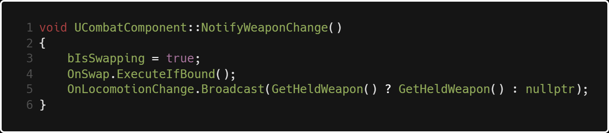

Weapon System
The Problem:
Because we wanted make ammo a precious resource like in Resident Evil, we knew we needed to create
a weapon system that lets the player swap back and forth from melee to gun. Each gun needed
bloom, recoil, reloading and aiming. The guns need to have IK and other animations and
the player needs to be able to cancel them on the fly. Finally, we needed to have an accurate hitscan.
The Solution: The Strategy Pattern
To start, we created an AWeapon class which implements the IInteractiveObject interface
(see lightweight interactive object system).
The AMeleeWeapon and AGun classes inherit from AWeapon. This way, all the
UCombatComponent
needs to know when a swap input is fired is that it's swapping to a weapon. It doesn't need to know
anything about recoil, damage or anything weapon type specific! Scroll wheel swapping can register
a lot of input events within a short amount of time, so having the function as light as possible is
certainly optimal.

When we swap weapons, we first need to check if we have more than one weapon or if we are
locked out of animation, which just checks if an animation is currently playing or if the weapon is aimed.
Then, we turn off the ability to shoot and make the current weapon invisible. After that we have the actual
swap logic, and if we exceed the last position of our inventory we reach a pointer to the first slot. Then
we set the current weapon to be visible and update our hud sprite on the bottom right to match the current weapon.

NotifyWeaponChange() locks us out of other animations by setting bIsSwapping to true, then broadcasts a custom FAnimationRequest
delegate that plays our weapon equip animation based on the gun, and finally broadcasts a delegate that updates
the IK system with required data based on the gun's position.
When we pick up a weapon much of the same logic occurs,
with some necessary initialization setup like enabling the weapon's mesh to simulate collision.
This is the bulk of our context class for the strategy pattern. We have logic for picking up and dropping
weapons, and notifying the HUD through the combat component.
Our AGun class is heavier. This is where we have IK logic, hitscan logic, as well as specific behaviors
like adding/subtracting ammo and reloading, as well as an overridden HUD update that displays ammo
remaining.
AMeleeWeapon contains a collider, and at it's core all it needs to do is call
OtherActor->TakeDamage() and make sure that it blacklists the player wielding the
weapon or any actors that it has currently hit during the swing, which is stored in HitActors.
If the OtherActor->TakeDamage() is an Unreal thing, and the beauty of it is if the other
actor does not have health then nothing happens. We don't need to do the checks for that in
our melee weapon class, leaving it simple.
Lightweight Interaction System

The Problem:
There are many objects in Project Nova that need to be interacted with by
the player. As a space engineer, there are always buttons that need pressing
or fuseboxes that need fixing. Thus, we needed a system where the player can scan the
environment around them and be aware of what they can and can't interact with.
But there is a problem. If you look at the image above, we have two different interactive objects,
one shotgun and one lever. If you were to look at one of those objects you might think to do this:
However, the more interactive objects you have in the world the heavier and heavier the system gets.
And what if you change your interact button to something else? What if AShotgun is a REALLY heavy class?
Then everytime you look at the shotgun you need to know everything public about the shotgun.
That's really problematic!
The Solution:
The IInteractiveObject interface solves the problem of having to check for each scanned object for
each possible interactive item. All it needs to know is that it's an interactive object, and as long
as each of those objects have some ground similarities, the scanning of objects logic could care less
about what it's looking at! As you can see above, IInteractiveObject is slim. The key components of
each interactive object are:
- A HUD prompt with a prefix, key, suffix and name. i.e. "Press Space to Vault"
- A method that does something when the player looks at it
- A method that does something when the player looks away
- A method that does something when the player presses the desired key to interact with the object, and a delegate that fires with it as well
- A method that does something in blueprint when the player interacts
- A bool that determines whether or not we can interact with that object.
- A desired binding index (an index in Unreal's list of inputs in Project Settings->Engine->Input) i.e. 0 is jump, 1 is shoot, 2 is interact
IInteractiveObject::ReceiveLookedAt(APawn* EventSender) is a method that is called
once whenever an interactive object is looked at. In order for them to each have a custom
key for interaction, we need to get a binding of that specific key, which is done in line 6.
then we use the FInputActionHandler named Signature as a delegate to hook up the key press
to the interactive object's InteractionEvent() function. We add this binding to EventSender which
is the pawn who interacted with the object, and store a handle of that binding so we can remove it later.
Whenever the shooter looks away from the object, the binding is removed. This way, we don't have any clutter of
extra bindings adding up and up causing the list of inputs to swell. This way also makes sure that you don't trigger
the interaction event of a pistol when you pull a lever because you just looked at a pistol and
the interact buttons are both bound to the same key.
By default, our binding name is "Interact." This will return an input binding that is hooked
up with the key "E" as shown below:
AInteractableGeneratorPiece is an example of a very barebones interactive object. It has a BeginPlay()
and its interaction event. Line 17 triggers any logic we would want the designers to be able to modify
through blueprint, shown below:
My Thoughts
The obvious limitation to this approach is that we are binding to these input bindings based on strings.
For example, FInputActionBinding("Interact", IE_Pressed) works, but if I misspell interact I'm going to
be very confused why it's not working. Or, if we change the name of the binding in the future we would need
to change every string binding in our code.
There are always decisions to be
made about the level of abstraction for gameplay systems - abstract it too much and your code
can run slow, and can become hard for others to follow. Abstract too little and you won't be
getting as much performance as you should be. Although it's not perfect, I think the interactive object
system I created is balanced in this way. Not too hard to read, not too slow. I learned a lot about
SOC by doing this.
I learned a lot about SOC by doing this. There are pros and cons to both Unity and Unreal,
but one thing that certainly is a plus in my book with Unreal C++ is the enforcement of OOP.
In Unity, anything is a GameObject and anything can run any kind of script. It's much more
relaxed and thus easier to write messy code.
State System
Like any other game, we created a state system to manage things like animation and movement.
A benefit to breaking down each condition that the character is in into states is that you
can specify exactly what limitations and what adaptations the player currently has.
An example of what I mean is if the player has less than 50% health remaining,
then they enter the crippled state.
Their walking animation may be different,
they walk 30% slower, maybe they can no longer jump. The point is, separating those limitations
out into their own states enforces organization of those player conditions. More importantly, we can
enforce which states the player can and can't enter from that state, which means we don't have to
have 100 bools and if statements spread throughout the player class determining what specific behavior
is enabled or disabled.
Prototype vent interaction
For this example, we are going to look at "venting" in our game, which is
still in the prototype phase. The process works like this:
- Player walks up to fusebox
- Player interacts with fusebox, animation plays
- Vent grates turn off and become interactable after anim is done
- Player interacts with vent
- Player lerps down to vent spline position and rotation
- Player crawls to end of vent spline
- Player lerps to standing position

When the player interacts with the fusebox, the vent becomes interactable. When the player
interacts with the vent the method above fires. If the player is the correct type of pawn we
are looking for, they enter the vent state, then we make sure the vent is no longer interactable,
turning off the grate collision as that happens.